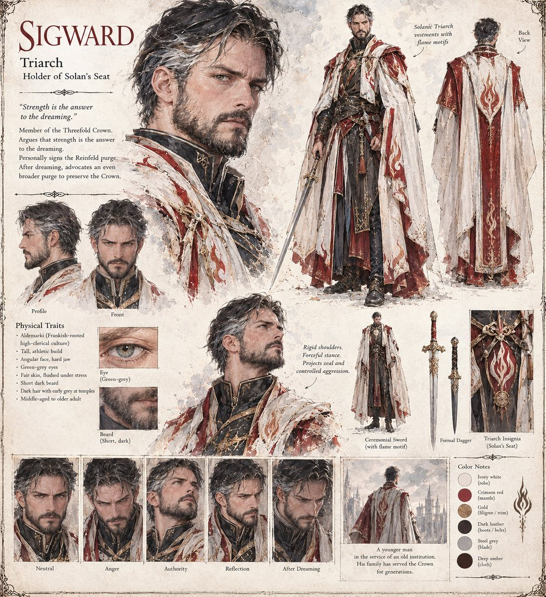

Sigward
Triarch of the Threefold Crown · holder of Solan's seat · signs the Reinfeld purge himself · middle-aged to older adult by his sheet
Holder of Solan's seat on the Crown, from a family that has served it for four generations, and the Triarch who argues through the decade of purges, with the particular ferocity of a young man defending an old institution, that strength is the only answer the dreaming deserves. He signs the order for Reinfeld's purge himself rather than delegate it, having made it a point of pride never to ask a Warden to carry out a purge he is not willing to have his own name on. His provincial appointees later form the Unbent, who conduct purges the Triarchs never sanctioned and are only nominally interested in being told to stop.
His father raised him on one lesson: that the Crown is a roof, not a truth, and a roof's worth is measured by how long it keeps the rain out; his grandfather died holding a stretch of wall in the Bulwark famine rather than let a granary riot become a civil war. The eleventh dream tests the lesson, and it survives. Admitting the Crown's cosmology is a lie, he concludes, would not correct the kingdom his grandfather died for; it would kill it. He never doubts for a moment that the globe is real, and he spends the following week arguing, with a sincerity his colleagues mistake for zealotry and the manuscript calls nearer to grief, that the answer to being personally shown the truth is to burn twice as hard against it, and demands a purge broader and more absolute than any before.
The manuscript calls him a young man defending an old institution; the sheet's trait list says middle-aged to older adult, though its caption for him reads “a younger man in the service of an old institution.” Both are left as they stand. The sheet draws him tall and athletic, with an angular face and a hard jaw, green-grey eyes, a short dark beard and dark hair greying early at the temples, in ivory-and-crimson vestments with flame motifs, a ceremonial sword and a formal dagger. The pull-quote below is the sheet's own and does not appear in the manuscript.
“Strength is the answer to the dreaming.”